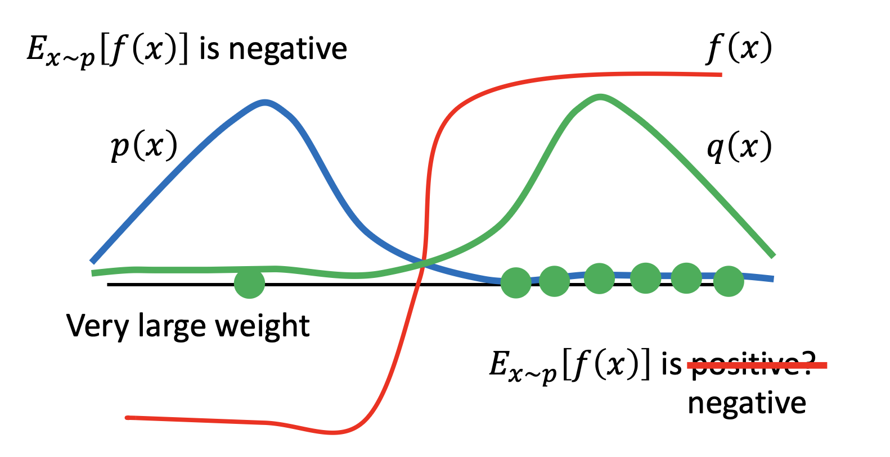
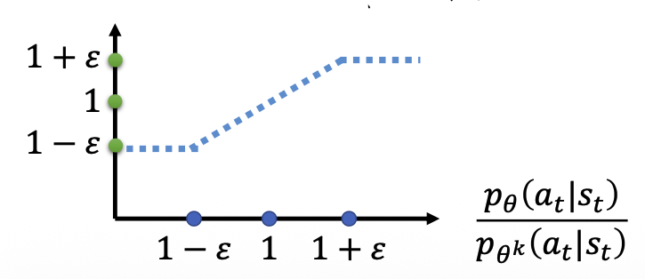
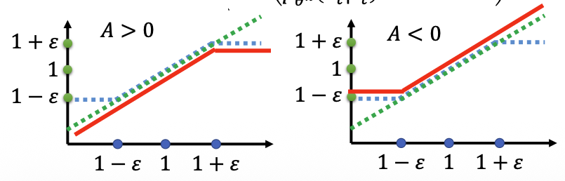
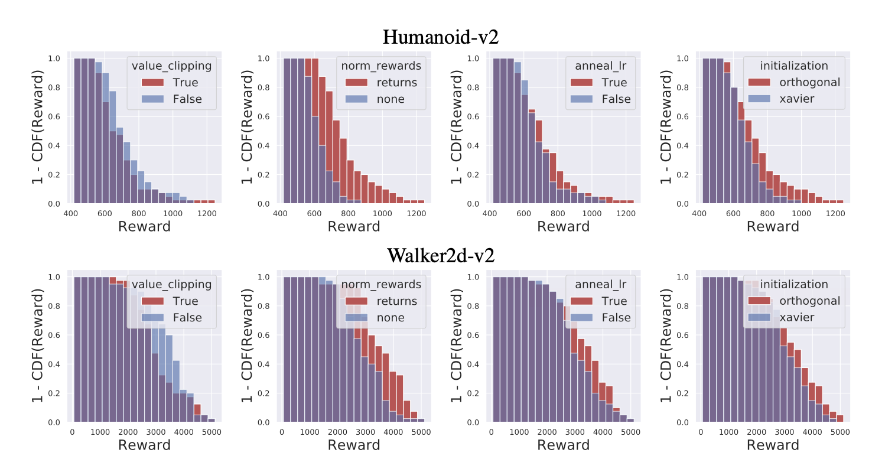

Deep Reinforcement Learning
What Matters in
RL training
從 PPO objective，走到真正影響 RL 訓練結果的 implementation choices。
From policy gradient to PPO2
Policy Gradient → Importance Sampling → variance → KL divergence → clipping。
On-policy先從 Policy Gradient objective 開始。
Policy Gradient
直接從 objective 與 gradient 開始
θ 更新後，資料分布也跟著改變，因此原始 Policy Gradient 是 on-policy。
Objective
R̄θ = 𝔼τ∼pθ(τ)[R(τ)]
Policy Gradient∇R̄θ = 𝔼τ∼pθ(τ)[R(τ) ∇log pθ(τ)]
On-policy資料必須由 πθ 收集；θ 更新後，舊資料來自 πθk，不能直接當成新策略的樣本。
Importance Sampling
先看一般形式：換分布、加權重
只有 q 的樣本時，用 p(x)/q(x) 校正成 p 下的期望。
Target expectation
𝔼x∼p[f(x)] = ∫ f(x)p(x)dx
Sample from q instead= ∫ f(x) p(x)/q(x) q(x)dx = 𝔼x∼q[f(x) p(x)/q(x)]
套進 RL令目標分布 p = pθ(τ)，抽樣分布 q = pθk(τ)，就能用固定舊策略的資料訓練新策略。
On-policy → near-policy reuse
用 πθk 的 rollout 更新 θ
固定舊策略收集資料，讓同一批 rollout 可以更新數次。
Importance-sampled Policy Gradient
∇R̄θ = 𝔼τ∼pθk[(pθ(τ)/pθk(τ)) R(τ) ∇log pθ(τ)]
Training patterncollect with θk → fix data → update θ several times
但有問題Importance Sampling 保證期望值相同，卻不保證 estimator 的 variance 相同。
Issue of Importance Sampling
分布重疊不足，少數樣本會支配估計
p、q 差太多時，少數巨大的 importance weights 會拉高 variance。
Same expectation
𝔼p[f(x)] = 𝔼q[f(x) p(x)/q(x)]
Variance under pVarp[f(x)] = 𝔼p[f(x)2] − (𝔼p[f(x)])2
Variance after reweighting samples from qVarq[f(x) p(x)/q(x)]
= 𝔼p[f(x)2 p(x)/q(x)] − (𝔼p[f(x)])2
𝔼p[f(x)2] ≠ 𝔼p[f(x)2 p(x)/q(x)] in general

核心想法既然大 ratio 來自新舊分布差太遠，就必須限制每次 policy update 的距離。
Keep p and q close · KL divergence
TRPO 硬限制，PPO 改成 KL penalty
兩者都用 KL 控制新舊 policy 的距離；差別是 constraint 與 adaptive penalty。
Shared surrogate objective
rt(θ) = πθ(at|st) / πθk(at|st)
LCPI(θ) = Êt[rt(θ) Ât]
Mean KL distanced(θ) = Êt[DKL(πθk(·|st) ∥ πθ(·|st))]
TRPO · hard constraintmaximizeθ LCPI(θ) subject to d(θ) ≤ δ
PPO · adaptive KL penaltymaximizeθ LKLPEN(θ) = Êt[rt(θ) Ât − βDKL]
TRPO 不允許平均 KL 超過 δ；PPO 將 KL 乘上 β 扣分，並依實際 KL 是否偏離 target 自動調整 β。Clipped 版本除了直接懲罰 KL，PPO2 用 ratio clipping 更簡單地移除「走太遠還能繼續獲利」的誘因。
PPO clipped objective
只保留較保守的改善幅度
clip 把有效改善限制在 [1−ε, 1+ε]，min 選較保守的值。
Maximizeclip(rt, 1−ε, 1+ε)：區間內保留原 ratio，區間外固定在邊界。
JθkPPO2(θ) = 𝔼t[min(rt(θ)At, clip(rt(θ),1−ε,1+ε)At)]
A > 0 限制上界；A < 0 限制下界。程式最小化時對 objective 取負號。

01
ICLR 2020 · Engstrom et al.
Implementation Matters in Deep Policy Gradients
先拆開核心演算法與 code-level optimizations，確認「高分」究竟來自哪裡。
Paper results
實作細節的貢獻，大於更換 PPO／TRPO 核心 step
實作技巧帶來的 reward improvement，在三個任務都大於切換 PPO／TRPO 核心 step。
PPO-NoClip 在三個任務都優於 PPO-M，且經充分調參後可接近標準 PPO。這不代表 clipping 沒有用，而是提醒我們不能把成果只歸因於 objective。
Code-levelAlgorithmic step
AAI = max(|PPO − TRPO+|, |PPO-M − TRPO|)
ACLI = max(|PPO − PPO-M|, |TRPO+ − TRPO|)
AAI 是更換 PPO／TRPO step 的最大差異；ACLI 是固定 step 後，加入 code-level optimizations 的最大差異。論文辨識的九類 code-level choices
- Value function clipping
- Reward scaling
- Orthogonal initialization + layer scaling
- Adam learning-rate annealing
- Reward clipping
- Observation normalization
- Observation clipping
- Tanh activation
- Global gradient clipping
What was actually tested?
上述九類 code-level choices 只測了以下這四項
也就是 16 種開關組合；其餘五項屬於作者辨識出的 implementation choices，但沒有接受同等完整的全因子分析。
- 01Value function clipping
- 02Reward scaling
- 03Orthogonal initialization
+ layer scaling - 04Adam learning-rate
annealing

Ablation verdict
四項技巧，哪些真的有用？
作者明確指出其中三項顯著改變 reward landscape，且是在受測 hyperparameter grid 中達到最高 PPO reward 的必要條件。
Value function clipping
影響較小且不一致；作者沒有把它列入「達到最高 reward 所必要」的技巧。
Reward scaling
顯著影響 reward 分布，並且是受測 grid 中達到最高 PPO reward 的必要條件。
Orthogonal initialization
+ layer scaling
顯著影響 reward 分布，並且是受測 grid 中達到最高 PPO reward 的必要條件。
Adam learning-rate annealing
顯著影響 reward 分布，並且是受測 grid 中達到最高 PPO reward 的必要條件。
適用範圍：這是 Figure 1 在 Humanoid-v2 與 Walker2d-v2、16 種開關組合及逐組調整 learning rate 下的結論，不代表所有環境都必然相同。
02
Google Brain · ICLR 2021 Oral
What Matters in On-Policy Reinforcement Learning
超過 25 萬個 agents、50+ 項設計選擇、五個 MuJoCo environments：從「有影響」走向「該先測什麼」。
250k+agents trained
50+design choices
5MuJoCo tasks
3seeds / configuration
Policy Losses
比較了什麼
- Policy loss：vanilla policy gradient（PG）、V-trace、PPO、AWR、V-MPO，以及 AWR / V-MPO 的極限情況 RPA。
- 同時 sweep 各 loss 的專屬 hyperparameters、Adam learning rate，以及重複走訪資料的次數。
Networks architecture
比較了什麼
- Policy / value network 的共享方式、網路深度與寬度，以及 activation function。
- Network weight initialization；policy 與 value 最後一層的 initialization scale。
- Action standard deviation 的表示、轉換、初始值與下限，以及 sampled action 的 clipping 與 tanh transformation。
Normalization and clipping
比較了什麼
- Observation normalization、value function normalization、per-minibatch advantage normalization。
- Gradient clipping 與 normalized observation clipping。
Advantage Estimation
比較了什麼
- Advantage estimator：N-step、GAE、V-trace，以及各自的 hyperparameters。
- PPO-style pessimistic value-loss clipping；value learning 使用 Huber loss 或 MSE。
- Parallel environments 的數量，因為它會改變每次收集的 experience fragment 長度。
Training setup
比較了什麼
- Parallel environments 數量、每個 iteration 收集的 transitions、data passes 數量與 minibatch size。
- 如何把資料分成 minibatches，包括是否打散 individual transitions，以及何時重新計算 advantages。
Timesteps handling
比較了什麼
- Discount factor γ、frame skip。
- Episode 因 timestep limit 結束時，是否採取特殊處理。
Optimizers
比較了什麼
- Adam 與 RMSprop，以及兩者的 learning rate、momentum、ε 等 hyperparameters。
- Learning rate 是否線性 decay 到 0。
Regularization
比較了什麼
- Policy regularizer 採 penalty 或由 Lagrange multiplier 執行的 soft constraint。
- Entropy、參考 N(0,1) action distribution 到 current policy 的 KL、current policy 與 behavior policy 間的 KL / reverse KL，以及 decoupled KL。
Synthesis of both studies
PPO 訓練方針
綜合 Implementation Matters 與 What Matters：先建立可重現 baseline，再逐軸測試，不把單篇結果當成通用最佳答案。
- Policy updatePPO clip ε = 0.25仍需往高低兩側調整
- AdvantageGAE λ = 0.9γ = 0.99 也只是起點
- OptimizerAdam 3 × 10⁻⁴β₁ = 0.9；測試 LR schedule
- ExplorationOutput scale × 0.01近零均值、較低初始 std
- InputObservation normalization明確記錄 statistics 更新方式
- Reward scaleReward normalization可作為起始 default；記錄 statistics 計算方式
- ArchitectureSeparate policy / valueTanh；value MLP 可較寬
- Data reuseShuffle + repeated passes測試每個 pass 重算 advantage
- CriticUnclipped value MSE不要因歷史預設就開 value clipping
讀書會後，可以直接照這個順序做實驗
固定環境版本、網路、步數與 seeds。
先找方向，再測試重要交互作用。
Return、KL、clipfrac、entropy、value loss。
核心 objective 與實作技巧分別 ablate。
閱讀來源
01開啟連結 ↗02開啟連結 ↗03開啟連結 ↗04開啟連結 ↗
PPO (v3)
Hung-yi Lee · Policy Gradient → Importance Sampling → KL constraint → PPO2
Implementation Matters in Deep Policy Gradients
ICLR 2020 · PPO／TRPO code-level optimization ablation
What Matters in On-Policy Reinforcement Learning?
Google Brain · ICLR 2021 · Large-scale study of 50+ design choices
The 37 Implementation Details of Proximal Policy Optimization
ICLR Blog Track 2022 · Official PPO reproduction checklist